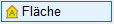
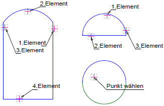
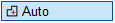

")

Definition von Einzelflächen für die Hüllflächenberechnung.
|
Hinweise: |
|
·Bei der Berechnung von Wandflächen werden die enthaltenen Fenster- und Türflächen automatisch abgezogen. Die Reihenfolge der Eingabe spielt dabei keine Rolle. ·Fenster-/Türflächen müssen vollständig innerhalb der Wandfläche liegen. |

Siehe auch: Hinweise zur Übernahme von Hüllflächen aus DXF/DWG-Dateien
1.Bauteiltyp und -attribute definieren
Bauteiltyp und -attribute müssen vor Auswahl der Bauteilbegrenzungen definiert werden. Nachträgliche Änderungen sind nur bedingt möglich. Der aktuell eingestellte Bauteiltyp wird in der Abfragezeile dargestellt, z. B. Fenster - 90.0° Ansicht - Süd-West.
§Klicken Sie im Funktionsbereich auf  .
.
Der Dialog Hüllflächen wird geöffnet.
§Wählen Sie im Hüllflächen-Dialog den Bauteiltyp und die gewünschten Attribute. Bestätigen Sie die Angaben mit OK.
Die Einstellungen werden übernommen und in der Abfragezeile angezeigt.

Konfiguration eines neuen Hüllflächen-Bauteils bzw. Änderung einzelner Bauteilattribute für das in der Zeichnung gewählte Hüllflächen-Bauteil.
Bauteiltyp
Beschreibung Auswahl eines Bauteiltextes.
Ausrichtung Exposition der Hüllfläche.
Flächen Neigung und Darstellungsart (Ansicht/Draufsicht) des Hüllflächenbauteils. Die Angaben wirken sich direkt auf die Flächenberechnung aus.
Flächendarstellung
|


2.Fläche wählen
In der Abfragezeile muss der gewünschte Bauteiltyp eingestellt sein, z. B. Außenwand - 90.0° Ansicht - Süd.

Die Vorgehensweise ist abhängig von der im Funktionsbereich gewählten Art der Flächenauswahl:
Um die Fläche durch Auswahl der Eckpunkte zu begrenzen (Standardeinstellung):§Wählen Sie unter der Eingabezeile die Option §Klicken Sie die Eckpunkte der Flächenbegrenzung im Uhrzeigersinn an. [1.Eckpunkt; 2.Eckpunkt;...]. §Schließen Sie die Auswahl durch wiederholtes Anklicken des ersten Eckpunktes oder mittels Rechtsklick ab. Die abgegriffene Fläche wird durch eine innenliegende Umrandung dargestellt. §Bestätigen Sie die automatische Vorauswahl für die Nummerierung oder geben Sie eine freie Nummer ein und bestätigen Sie mit der Eingabetaste. [Nummerierung]. §Wählen Sie gegebenenfalls die Anordnung von Flächenwert und -bezeichnung und setzen Sie die Flächenbeschriftung per Mausklick in der Zeichnung ab. [Lage]. Die Flächeninformationen werden in der Zeichnung angezeigt. Beispiel:
Um die Fläche durch Auswahl von Linien- oder Kreis-Elementen zu begrenzen:§Klicken Sie die gewünschten Elemente entgegen den Uhrzeigersinn an. [Klicken Sie Elemente an]. §Bestätigen Sie die Auswahl durch Rechtsklick. Die abgegriffene Fläche wird durch eine innenliegende Umrandung dargestellt. §Bestätigen Sie die automatische Vorauswahl für die Nummerierung oder geben Sie eine freie Nummer ein und bestätigen Sie mit der Eingabetaste. [Nummerierung]. §Wählen Sie gegebenenfalls die Anordnung von Flächenwert und -bezeichnung und setzen Sie die Flächenbeschriftung per Mausklick in der Zeichnung ab. [Lage]. Die Flächeninformationen werden in der Zeichnung angezeigt. Beispiel:  |


 §Klicken Sie in eine durch Linien- oder Kreiselemente abgegrenzte Fläche. [Punkt wählen]. Die erkannte Fläche wird durch eine innenliegende Umrandung dargestellt. §Bestätigen Sie die automatische Vorauswahl für die Nummerierung oder geben Sie eine freie Nummer ein und bestätigen Sie mit der Eingabetaste. [Nummerierung]. §Wählen Sie gegebenenfalls die Anordnung von Flächenwert und -bezeichnung und setzen Sie die Flächenbeschriftung per Mausklick in der Zeichnung ab. [Lage]. Die Flächeninformationen werden in der Zeichnung angezeigt. |
§Geben Sie unter Fläche eingeben die Grundfläche (Länge*Breite) ein und bestätigen Sie mit der Eingabetaste. (z. B.: 3.5*6.3). Beachten Sie die Eingabeeinheiten (untere Menüleiste → Eingabe). §Bestätigen Sie die automatische Vorauswahl für Nummerierung des gewählten Bauteiltyps oder geben Sie eine freie Nummer ein und bestätigen Sie mit der Eingabetaste. [Nummerierung]. §Wählen Sie gegebenenfalls die Anordnung von Flächenwert und -bezeichnung und setzen Sie die Flächenbeschriftung per Mausklick in der Zeichnung ab. [Lage]. Die Flächeninformationen werden in der Zeichnung angezeigt. |